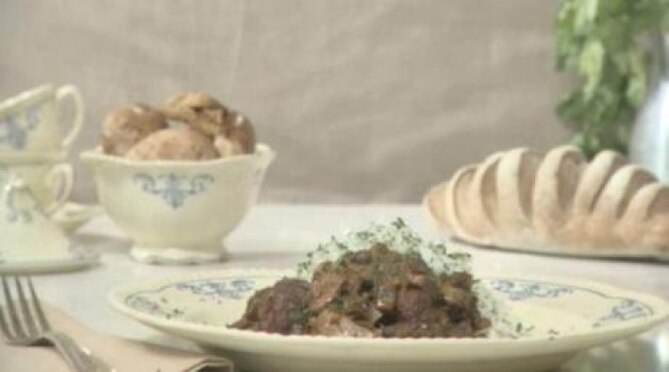

Strogonoff de Carne p/2

Ingredientes
1 Colher(es) de sopa de azeite
400 Grama(s) de carne
2 Unidade(s) de dentes de alho
1 Unidade(s) de cebola
8 Unidade(s) de champignons
4 Colher(es) de sopa de creme de leite
1 Unidade(s) de echalotte
3 Colher(es) de sopa de cogumelos secos
2 Colher(es) de sopa de margarina
1 Colher(es) de chá de páprica
2 Colher(es) de sopa de salsa picada
4 Unidade(s) de portobellos
4 A gosto de sal
1 Xícara(s) de vinho branco ou xerez
Modo de Preparo
1 - Pique a cebola, os echalottes e o alho. Corte os champignons e os portobellos em lâminas e reserve. Pique os cogumelos secos e deixe de molho no xerez durante 15 minutos. Após hidratados, escorra e reserve o líquido.
2 - Em uma frigideira quente, com uma parte da margarina e um pouco de azeite, refogue a carne cortada em cubos até dourar completamente
3 - Acrescente a cebola, o echalotte e misture. Quando a cebola ficar transparente, acrescente o alho e tempere com um pouco de sal.
4 - Coloque o resto da margarina, os cogumelos hidratados e misture novamente. Cozinhe durante 15 minutos em fogo baixo. Despeje o xerez e após o líquido evaporar, adicione a páprica e a salsa picada.
5 - Despeje o creme de leite e cozinhe mais 10 ou 15 minutos até a mistura reduzir e engrossar. Sirva bem quente com arroz